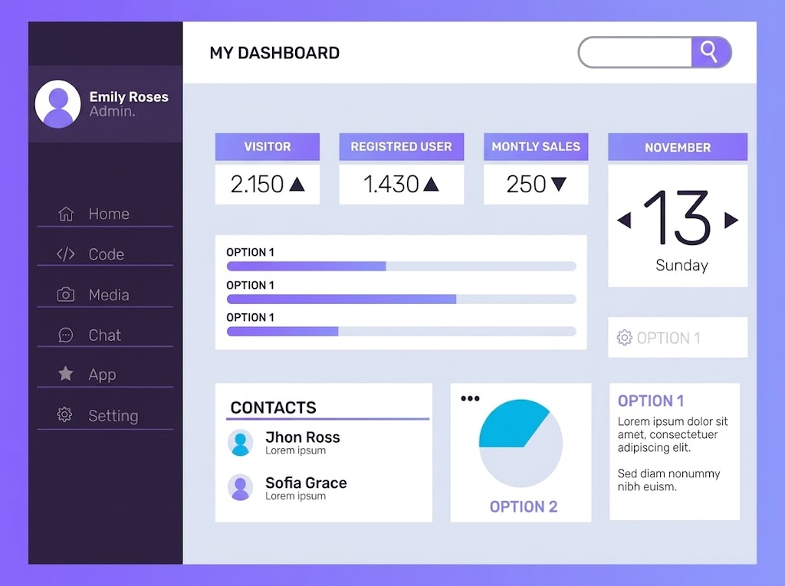
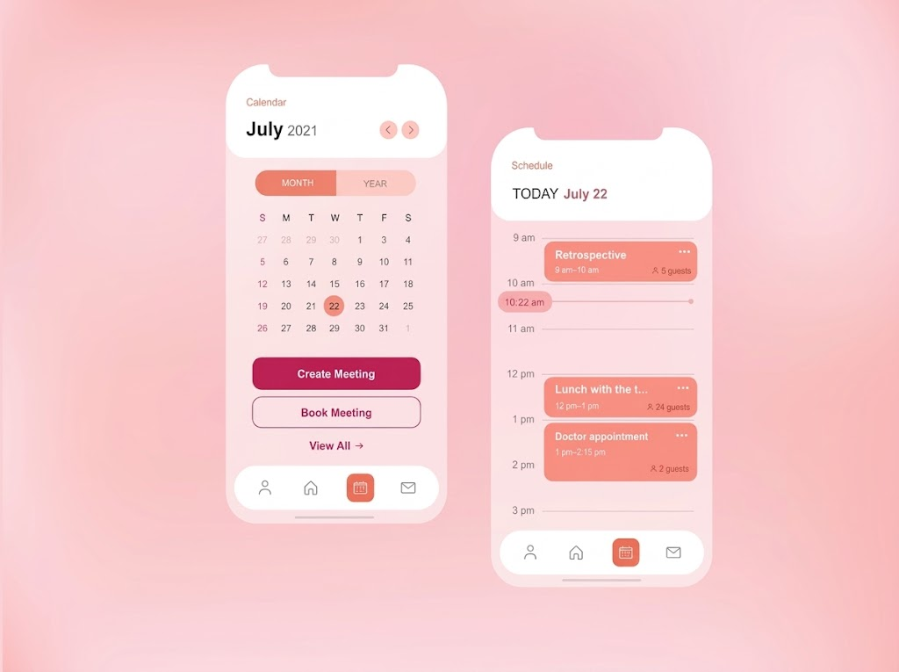
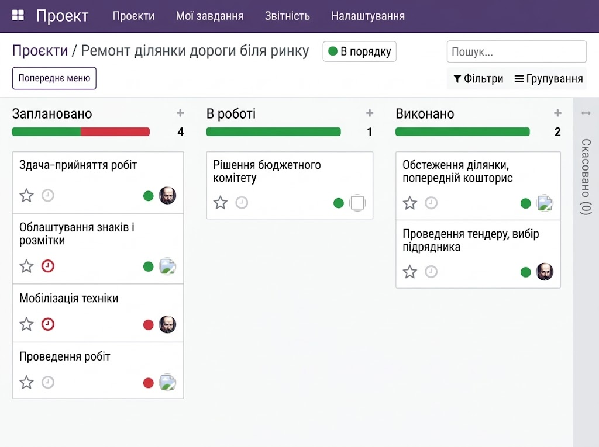
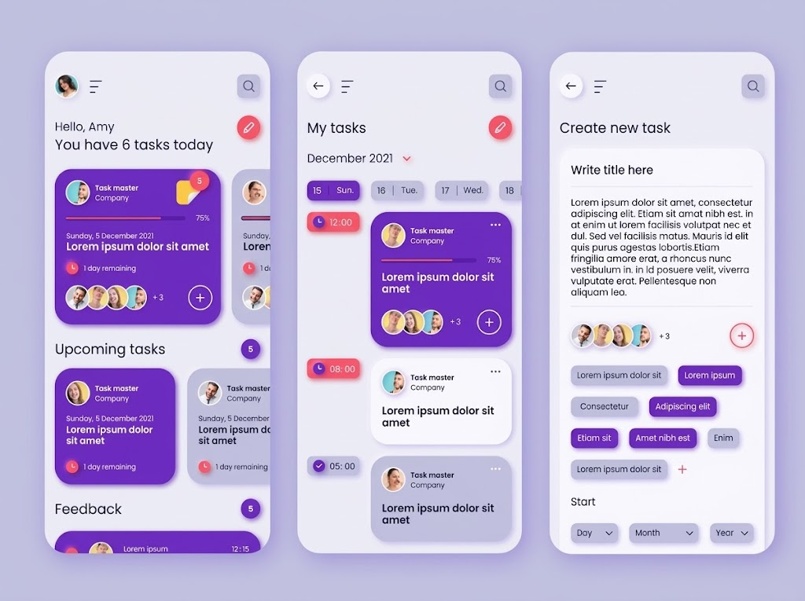
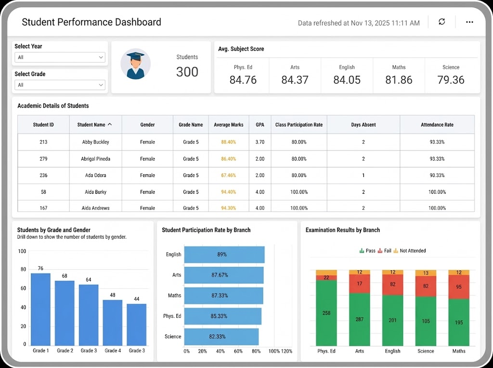
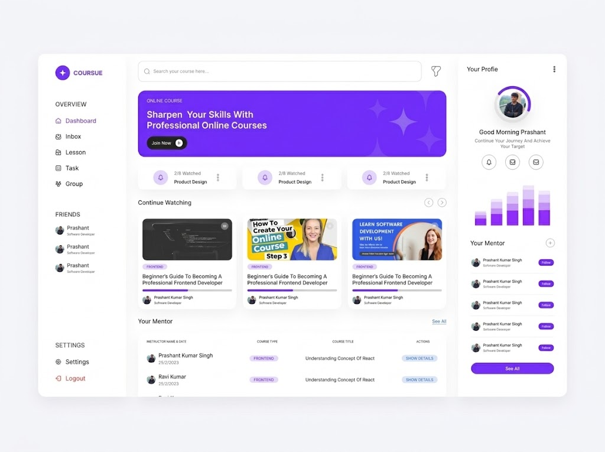

Бакалавр програмної інженерії
Початок шляху в галузі: алгоритми, бази даних та основи розробки програмних систем.
Персональна сторінка викладача
Доцент кафедри програмної інженерії
Олександр Коваленко - доцент кафедри програмної інженерії, дослідник і викладач, який поєднує академічні знання з практикою створення сучасних цифрових продуктів.
Його наукові інтереси охоплюють архітектуру програмного забезпечення, інженерію вимог та методи забезпечення якості. У викладанні особливу увагу приділяє критичному мисленню, співпраці та застосуванню знань на практиці.
Ключові етапи професійного шляху: від навчання до керівництва навчальною програмою.
Початок шляху в галузі: алгоритми, бази даних та основи розробки програмних систем.
Спеціалізація з архітектури програмного забезпечення та інженерії вимог.
Дослідження методів забезпечення якості програмних систем.
Початок викладацької діяльності, перші авторські курси.
Розробка нових навчальних дисциплін і керівництво дипломними проєктами.
Оновлення програми за вимогами індустрії та запуск проєктних практикумів.
Показники викладацької та наукової діяльності.
10
років викладацького досвіду
1200+
студентів, що пройшли навчання
24
наукові публікації
4.8 / 5
середня оцінка студентів
90%
виконання навчального плану цього семестру
Навчальні курси зосереджені на повному циклі створення програмних продуктів - від першої ідеї до надійної реалізації.
Архітектура програмних систем, процеси розробки та командна робота.
Методи моделювання, патерни проєктування та якість коду.
Аналіз потреб, специфікація та управління змінами у проєктах.
Актуальний розклад занять на весняний семестр 2026 року.
| День | Час | Дисципліна | Формат | Місце |
|---|---|---|---|---|
| Понеділок | 10:00-11:20 | Основи програмної інженерії | Лекція | Ауд. 105 |
| Вівторок | 12:00-13:20 | Проєктування програмного забезпечення | Практичне | Ауд. 308 |
| Середа | 10:00-11:20 | Інженерія вимог | Лекція | Ауд. 214 |
| П’ятниця | 14:00-15:20 | Основи програмної інженерії | Практичне | Ауд. 306 |
Роботи студентів, виконані на курсах під моїм керівництвом.

Вебзастосунок для відмітки присутності студентів на заняттях.

Зручний перегляд занять і сповіщення про зміни в розкладі.

Інструмент для фіксації та узгодження вимог замовника з командою.

Автоматичні відповіді на типові запитання вступників.

Візуалізація оцінок і відвідуваності по групах та дисциплінах.

Структурована добірка матеріалів з пошуком за темами курсів.
Що кажуть студенти після проходження навчання.
★★★★★
Складний матеріал пояснюється на реальних прикладах, а після лекцій одразу розумієш, як застосувати його в проєкті.
★★★★★
Практичні заняття - це справжня командна розробка. Саме тут я навчився працювати з вимогами та відгуками замовника.
★★★★★
Викладач завжди готовий допомогти й дає чіткий зворотний зв'язок. Інколи бракувало часу на складніші теми.
★★★★★
Курс змінив моє уявлення про якість коду. Тепер я проєктую систему ще до того, як пишу перший рядок.
Заповніть форму, і я підтверджу зручний час відповіддю на e-mail. Консультації проходять у вівторок, 15:00-17:00.